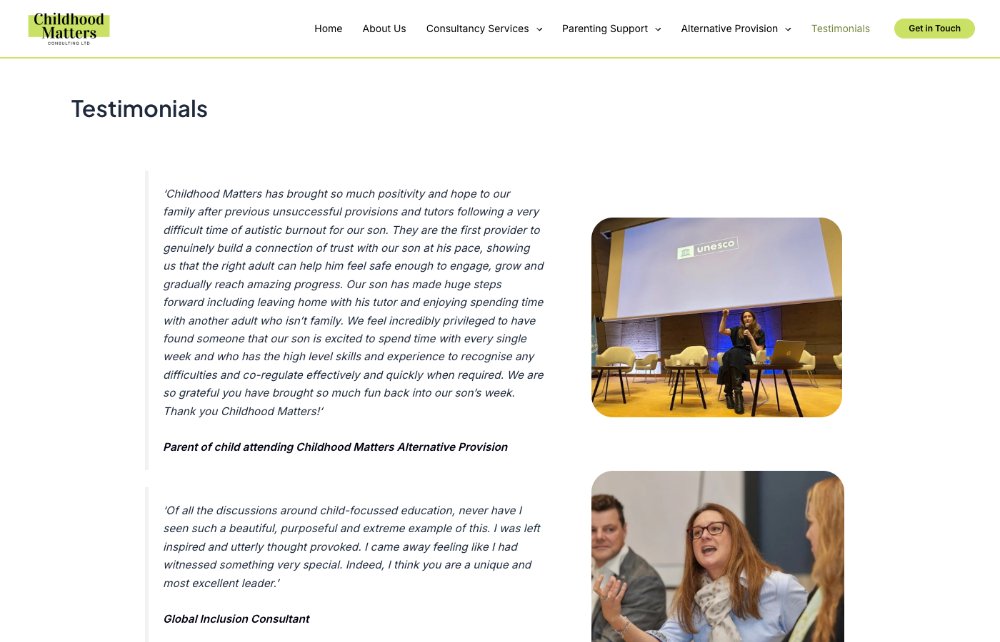
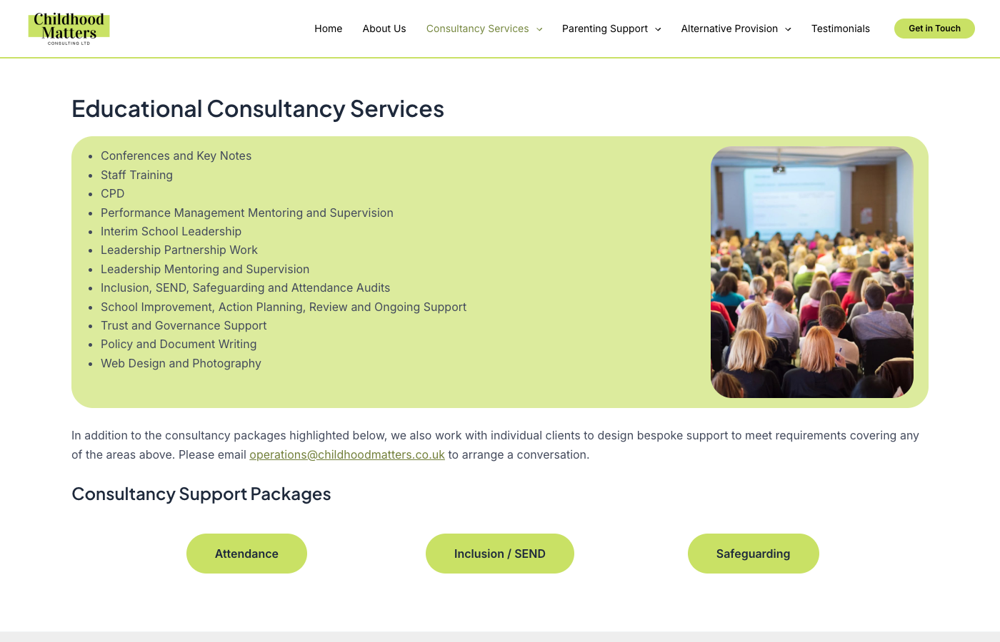

Section 4 — Content & Conversion
The site informs,
but doesn't yet convert
- The site describes services well but is not yet working hard enough as a business development tool
- Several content gaps are reducing trust and making it harder for visitors to take the next step
Important
Testimonials are thin and anonymous
- Only four testimonials on the site — all anonymous, with no name, school, or organisation attached
- Attributed only to generic descriptors such as "Head of Secondary, Community Special School"
- Headteachers and trust leaders commissioning consultancy at this level expect verifiable references
- Anonymous quotes carry very little weight with this audience

Testimonials page — four anonymous quotes with no names, organisations, or dates. Decision-makers at headteacher and trust level expect verifiable references, not unattributed quotes.
Recommendation
- Seek permission from satisfied clients to use their name and organisation name
- Build towards a minimum of 10–15 testimonials
- Set up Google Reviews for third-party verified social proof that appears in search results
- Distribute testimonials across relevant service pages, not just on a single standalone page
Opportunity
No case studies — the most persuasive content type is missing
- No case studies exist anywhere on the site
- For a consultancy, case studies are consistently the highest-converting content type
- A short account of the challenge, the approach, and the outcome — improved attendance, a positive Ofsted, a child back in education — is far more persuasive than a service description alone
- Schools or families who prefer anonymity can be presented without names
Recommendation
- Develop two to three case studies to begin with
- Schools or families who prefer anonymity can be presented without names (e.g. "A primary school in the East Midlands")
- Publish case studies as standalone pages and link them from the relevant service sections
Improve
No pricing information on service pages
- Named packages exist for attendance, inclusion/SEND, and safeguarding — but none include any indication of cost
- Some visitors will leave rather than make an enquiry just to find out if the service is within budget
- Even a starting-from price or day rate range removes that barrier

Services page — packages are listed with no indication of cost. Even a starting-from price or day rate range would help visitors self-qualify and reduce the friction of making an initial enquiry.
Recommendation
- Add indicative pricing, day rate ranges, or package tier descriptions to service pages
- At minimum, add a statement such as "Packages are tailored to your requirements — contact us for a no-obligation quote"
- Make it easy for visitors to understand what happens after they enquire
Improve
Contact page is missing key information
- Phone number and email are present — good
- No physical or registered business address
- No response time commitment — visitors don't know what to expect after submitting the form
- No indication of next steps — these small details reduce uncertainty and increase conversions
Recommendation
- Add a registered business address
- Add a response time commitment ("We aim to respond within one working day")
- Add a brief note on next steps after the form is submitted
- Add a LinkedIn link to the company page as an additional contact route